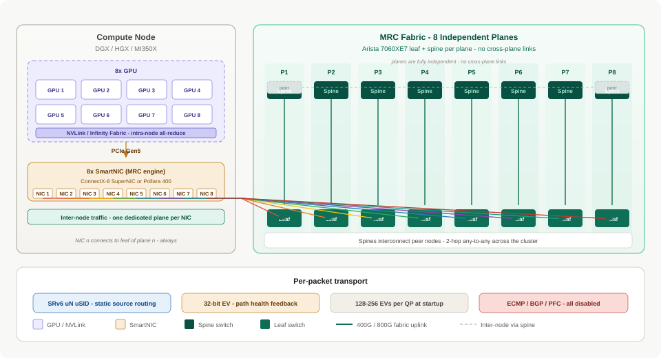

Multiplanar Fabric Documentation
Reference architecture and design diagrams for MRC (Multipath Reliable Connection) networking — the OCP-standard approach to scaling AI training clusters over deterministic, multi-plane Ethernet fabrics.
MRC replaces traditional InfiniBand-style fat-tree designs with eight fully independent fabric planes, static SRv6 source routing, and NIC-driven path selection. The result is predictable, high-bandwidth inter-node communication for distributed training workloads without ECMP, dynamic routing, or application changes.
What is MRC?
Multipath Reliable Connection (MRC) is defined in OCP MRC Rev 1.0 and targets large-scale GPU clusters where collective operations (all-reduce, all-gather) dominate inter-node traffic.
| Principle | Description |
|---|---|
| Eight independent planes | Each plane is a dedicated leaf–spine pair with no cross-plane links. Traffic on plane n never traverses plane m. |
| NIC-to-plane wiring | NIC n on every node connects to the leaf switch of plane n. This discipline is the foundation of the entire design. |
| Static SRv6 routing | Paths are encoded in an SRv6 uN uSID stack at the destination address. Switches perform deterministic uSID shifts — no BGP, no ECMP. |
| 32-bit Entropy Value (EV) | A per-packet identifier striped across the IPv6 flow label and UDP source port. EVs are generated at QP startup (128–256 per QP, split across planes) and echoed in SACK/NACK feedback for path health monitoring. |
| Lossy Ethernet RDMA | PFC is disabled. The MRC engine in the SmartNIC handles retransmission and congestion response at the transport layer. |
At the node level, intra-node traffic (NVLink on Nvidia, Infinity Fabric on AMD) handles local all-reduce, while inter-node traffic flows through MRC-capable SmartNICs over the eight-plane fabric.
Documentation map
Protocol & packet format
Understand how MRC encodes paths and entropy in every packet.
- MRC Packet Structure — SRv6 + Entropy Value — IPv6-in-IPv6 encapsulation, outer SRv6 uN uSID stack, 32-bit EV placement, and the role of EV in SACK/NACK feedback (not forwarding).
- MRC Packet Spray Animation — Interactive simulation of per-packet EV spray across eight planes, with congestion, trimming, failure, and NACK re-steering.
Node-level integration
How individual compute nodes connect GPUs to the eight-plane fabric.
- Nvidia DGX H100 — MRC Fabric Integration — NVLink/NVSwitch for intra-node all-reduce; ConnectX-7 NICs for inter-node MRC at 8 × 400G (3.2 Tbps per node).
- AMD MI350X — MRC SRv6 Fabric Connectivity — AMD Instinct MI350X with Pensando Pollara 400 NICs; OCP MRC Rev 1.0 ibverbs shim via RCCL; AMD vs Nvidia node comparison on the same fabric.
Vendor-agnostic fabric
MRC is fabric-agnostic. Both Nvidia and AMD nodes implement the same OCP MRC Rev 1.0 semantics — identical EV generation, SRv6 forwarding, and plane wiring. An Arista 7060XE7 switch sees indistinguishable traffic from either vendor, making mixed AMD + Nvidia clusters architecturally valid.
Rack & data center deployments
End-to-end rack layouts pairing compute with MRC fabric switches.
- 72-GPU MRC Rack — Arista 7060XE7 + Nvidia DGX H100 — 9 × DGX H100 (72 GPUs), 16 × 7060XE7 (8 leaf + 8 spine), 28.8 Tbps aggregate, 2-hop any-to-any.
- 72-GPU Blackwell Ultra MRC Rack — Arista 7060XE7 + Nvidia HGX B300 — 9 × HGX B300 with ConnectX-8 SuperNICs at 800G per uplink, 57.6 Tbps aggregate — same MRC discipline at double the link speed.
- GB300 NVL72 — Liquid-Cooled Data Center Rack — 48U MGX rack with 72 × B300 GPUs, CDU cooling loop, 135 kW TDP, and integrated MRC fabric switching at rack scale.
Key design parameters
| Parameter | H100 generation | Blackwell generation |
|---|---|---|
| NIC | ConnectX-7 | ConnectX-8 SuperNIC |
| Uplink speed | 400G per plane | 800G per plane |
| NICs per node | 8 | 8 |
| Fabric BW per node | 3.2 Tbps | 6.4 Tbps |
| Leaf/spine switch | Arista 7060XE7 | Arista 7060XE7 |
| Planes | 8 (independent) | 8 (independent) |
| Routing | SRv6 uN uSID (static) | SRv6 uN uSID (static) |
| EVs per QP | 128–256 | 128–256 |
| ECMP / dynamic routing | Disabled | Disabled |
Architecture at a glance

Each plane operates as an isolated 2-hop leaf–spine network. A 72-GPU rack typically pairs nine compute nodes with sixteen Arista 7060XE7 switches — one leaf and one spine per plane — delivering deterministic any-to-any connectivity for collective traffic.
Getting started
Browse the Pages section in the navigation sidebar for interactive SVG diagrams covering node topology, rack wiring, packet headers, and vendor comparisons. Each page is a self-contained reference diagram with legends, callouts, and design notes.